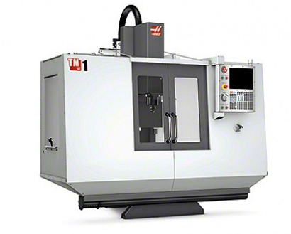

Технические характеристики
-
Макс. перемещение по оси X, мм 762
- Макс. перемещение по оси Y, мм 305
- Макс. перемещение по оси Z, мм 406
- Максимальное расстояние от стола до торца шпинделя, мм 508
- Минимальное расстояние от стола до торца шпинделя, мм 102
- Длина стола, мм 1213
- Ширина стола, мм 267
- Макс. нагрузка на стол (равном. распределенная), кг 454
- Ширина Т-образных пазов, мм 16
- Расстояние между Т-образными пазами, мм 101,6
- Размер конуса шпинделя 40
- Максимальная частота вращения шпинделя, об/мин 4000
- Макс. мощность шпинделя, кВт 5,6
- Макс. крутящий момент, Нм 45
- Макс. осевое усилие, кН8, 9
- Макс. скорость холостых подач, м/мин 5,1
- Макс. рабочие подачи по осям XYZ, м/мин 5,1
- Точность позиционирования, мм ±0,010
- Повторяеомсть, мм
- Объем бака СОЖ, л 57 (опция)
- Ориентировочная масса станка (зависит от комплектации), кг 2050
Базовая комплектация
- Лампа индикации состояния станка
- Функция автоматического отключения станка
- Комплект регулировочных опор
- Рабочий стол метрического исполнения
- USB порт
- Система подачи СОЖ, насос 186 Вт, бак 76 л
- Система интуитивного программирования
- Экспортная упаковка
- Внутренний автотрансформатор (354–480 В)
- Кнопочный выключатель для блокировки памяти для пульта управления